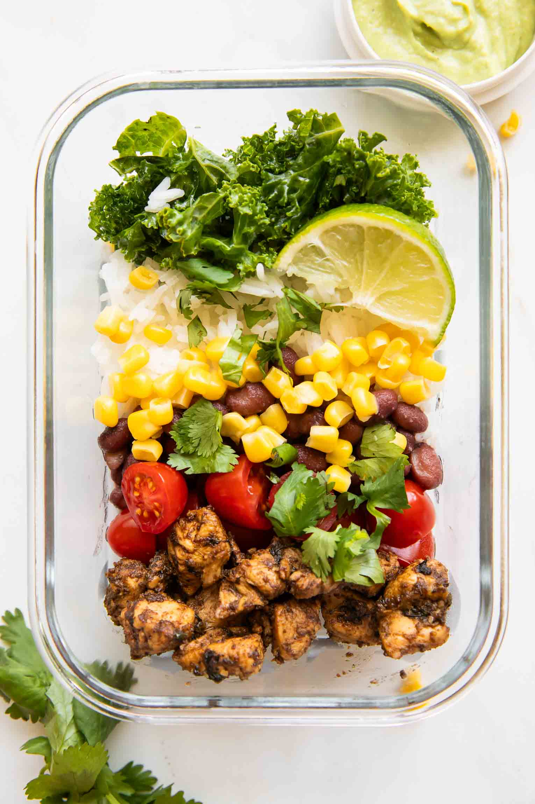

Meal Prep Chicken Power Bowls

Description
Do you often find no time to cook during the work week and want to find something easy to make in under 40 minutes? Meal-prepping this chicken burrito bowl recipe during the weekend will allow you to eat during the whole work week without cooking every day! This recipe features a bed of brown rice and black beans, topped with southwest chicken, avocado lime sauce (or chipotle sauce), and colorful veggies. This dish is also gluten-free!
Ingredients
Southwest Chicken
- 1/4 cup apple cider vinegar
- 1 tsp chili powder
- 1/2 tsp dried oregano
- 1/2 tsp ground cumin
- 1/2 tsp smoked paprika
- 1 tsp salt
- 1/2 tsp pepper
- 1/4 tsp cayenne (optional)
- 1 tsp minced garlic
- 1 tbsp chopped fresh cilantro
- 1 1/2 tbsp olive oil (divided)
- 1-1 1/2 pounds chicken breasts (cubed)
Meal Prep Burrito Bowls
- 3 cups chopped kale (or lettuce of choice)
- 1 tsp olive oil
- 1/2 tsp salt
- 1 cup halved grape tomatoes
- 1/2 cup corn
- 1 1/2 cups cooked black beans
- 2 cups cooked brown rice
- chopped fresh cilantro (to taste)
- Store-bought Avocado Lime Sauce or Chipotle Sauce
Steps
Cook the Chicken
- Combine the apple cider vinegar, dried spices, minced garlic, fresh cilantro, and 1/2 tbsp of olive oil in a large bowl or container.
- Add the cubed chicken and coat evenly in the marinade. Cover and let it marinate for a few minutes while you prep the other ingredients (you could also marinate it in the fridge the night before to save time the next day and for a better flavor).
- When ready to cook, add the remaining olive oil to a skillet over medium-high heat. Add the chicken (along with any leftover marinade) and cook for about 12-15 minutes, or until brown and cooked through, stirring occasionally.
Assemble the Bowls
- Meanwhile, lightly "massage" the kale with the olive oil and salt.
- Divide it into 4 bowls along with the tomatoes, corn, black beans, cooked rice, and cilantro.
- Let the chicken rest and cool for a few minutes after it's done cooking.
- Add the chicken to the bowls and drizzle with the sauce (or keep separate until ready to enjoy)!